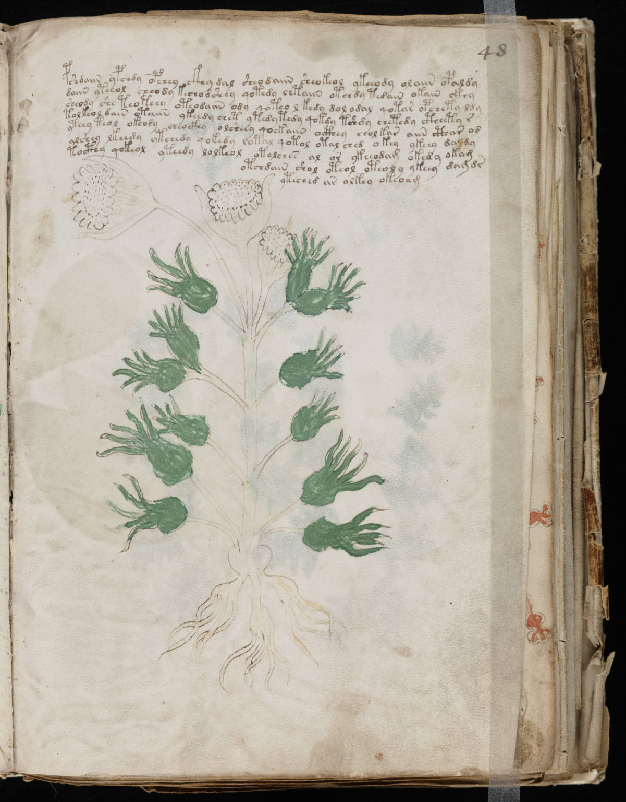

f48r
1pshdaiin ypchdy opchey ckhy dal sheodaiin sheokeol ykeeody olaiin opaldy2daiin yteeol choody kechodshey qotedy chtaiin otchdy tedain okain ckhy3sheody she teoteey oteodaiin ody qoteo l kedy dol odal qotar opchety ldy4tolkeol dain otaiin ykeedy chet ytedy tedy qokdy tshdy chetedy ctheety r5ytchy teol okeody cheockhy olsheey qoekaiin octhey chol kar aiin cthar od6alshey lkeedy ytchedy qokedy lotal qotol otal ched okey ykeey dalmy7tocthy qokeol yteedy lolkeol otolches al or ykeeodam okedy okam8otchdain shol oteol oteoly ykeey dam dr9yteched ar alkey okeoam
